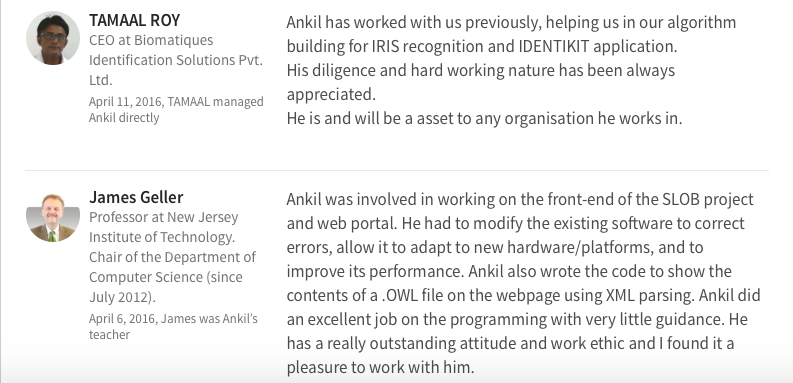
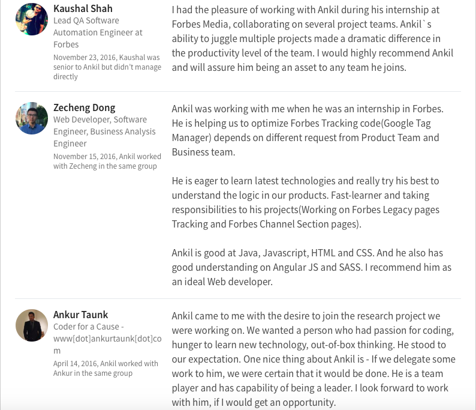

<section id="about">
<div class="container">
            <div class="row">
                <div class="col-lg-12 text-center">
                    <h2 class="text-align">About Me</h2>
                    
                </div>
            </div>
            <div class="row edu4">
                
                <div class="col-lg-6">
                
                    <p align="justify">I hold a Master's degree in Computer Science from New Jersey Institute of Technology, New Jersey, United States. Having graduated in December 2016, I joined Perficient as an Associate Technical Consultant in March 2017. I also did an internship at Forbes in the summer of 2016 where I worked as a Software Engineering Intern; along with that I was also concurrently working under Dr. James Geller (Department of Computer Science, NJIT) as a Research Team Member from January 2016 to December 2016. I have also worked as a Software Engineer for about a year before moving here to the United States. Although, I am a little inclined towards Java I enjoy playing with Javascript, AngularJS to name a few. I am a dedicated, hard working individual and have a passion to learn new technologies. My strengths lie in my multitasking abilities, communication skills, and flexibility in working in a team. I am a huge admirer of sports and I love playing video games in my spare time.</p>
                
                </div>
            <div class="col-lg-6 edu8" style="height: 460px; overflow-y: scroll;">
                  
                
            </div>
            </div>
            <div class="row">
                <div class="col-lg-8 col-lg-offset-2 text-center">
                    <a href="img/Resume.pdf" target="_blank" class="btn btn-sm btn-outline edu5">
                       <h4><i class="glyphicon glyphicon-file"></i>Click to see my Resume</h4>
                    </a>
                </div>
            </div>
            </div>
        </div>
        </section>